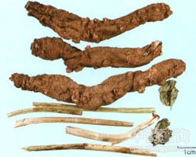

岩参

拼音
Yán Shēn
别名
岩生
来源
药材基源：为胡椒科植物岩参的藤茎及叶。 拉丁植物动物矿物名：PiperpubicatulumC.DC 采收和储藏：四季均可采，鲜用，茎去粗皮，切片，晒干。
生境分布
生态环境：生于沟谷、坡地疏林或密林中，常攀附于石壁上。 资源分布：分布于支南南部至西南部。
药材特点
岩参 攀援藤本，老茎圆柱形，外皮木栓质增厚，黄褐色，有纵裂沟槽；幼茎有细条纹，皮孔明显。叶互生；叶片纸质，具细密腺点，圆卵形、阔椭圆形或阔卵形，常歪斜，长9-21cm，宽5-12cm，叶脉7-8条，2对离基从中脉发出，基余基出，网及明显。花单性，雌雄异株；穗状花序与叶对生，长3-4cm；雌花苞片圆形，直径约1mm，柄被柔毛；子房离生，柱头3-4。浆果先端有脐状突起。花期夏季。
性状
性状鉴别 茎枝稍弯曲,表面有细纵纹,具疣状突起。叶多皱缩,展平后歪阔卵形,长14-20cm，宽6-12cm，有密集的细小腺点，无毛，叶基两侧偏斜，叶脉7-9条，有2对离基从中脉发出，网脉明显；叶柄较长，基部鞘状。有时可见与叶对生的穗状花序，气香，味微辛辣。
性味
辛；平
功能主治
行气止痛；止泻痢。主脘腹胀痛；泻痢腹痛；牙痛
用法用量
内服：煎汤，3-15g。
化学成分
无化学成分数据
药理作用
1：无药理作用数据
摘录
《中华本草》